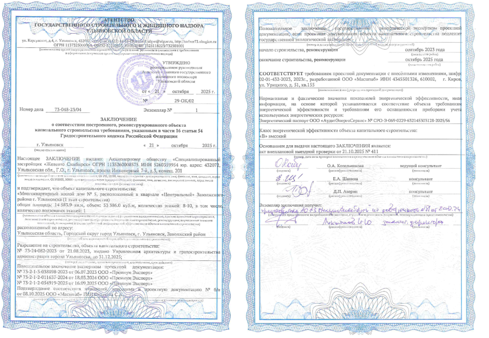

Заключение о соответствии
Заключение о соответствии — это документ, выдаваемый органом государственного строительного надзора после положительного завершения итоговой проверки. Оно подтверждает, что объект капитального строительства соответствует требованиям проектной документации.
В зависимости от региона форма документа может отличаться, но не значительно: типовая форма ранее была закреплена на законодательном уровне с схожими формулировками.
В Ульяновской области заключение печатается на специальном бланке, изготовленном в типографии, чтобы исключить подделку — ведь это важный документ для получения разрешения на ввод объекта в эксплуатацию.
В заключении указывается: название объекта, адрес, номер и дата разрешения на строительство, номер и дата экспертизы проектной документации, шифр проектной документации, класс энергоэффективности объекта, инспектор ГСН (ФИО, должность, подпись).

Цифровизация ГСН в скором времени позволит отказаться от бумажного варианта: получение через портал Госуслуг или замена на реестровую запись (уведомление о включении в реестр заключений вместо бланка).